전기철도기사 (2012-05-20 기출문제)
1과목: 전기철도공학
1. 고속철도에서 열차운행 속도가 250[km/h] 초과할 때 전차선의 구배[‰]는?
- 3[‰]
- 2[‰]
- 1[‰]
- 0[‰]
(정답률: 알수없음)

2. 지상부의 가공 전차선이 터널내로 들어와 강체 전차선으로 바뀌어지는 부분에 설치하는 장치는?
- 흐름방지 장치
- 건널선 장치
- 익스팬션 죠인트
- 지상부 이행장치
(정답률: 알수없음)
3. 직류전기철도에서 귀선용 레일의 전위에 대한 설명으로 거리가 먼 것은?
- 부하전류가 작을수록 높아진다.
- 레일의 고유저항이 클수록 높아진다.
- 레일의 대지 절연저항이 클수록 높게된다.
- 부하점과 변전소간 거리가 멀수록 높아진다.
(정답률: 알수없음)
4. 이선(離線)현상에 대한 설명으로 거리가 먼 것은?
- 팬터그래프의 이동으로 전차선이 순간적으로 이탈이 발생하는 것을 말한다.
- 차량 이동 중에 생기는 이선시에도 전압이 변동되지 않으므로 열차의 속도를 결정하는 것과는 무관하다.
- 이선은 전기적으로 불완전한 접촉을 발생시켜 아크를 일으킨다.
- 이선에 의해 전차선의 이상 마모 및 손상을 가져온다.
(정답률: 알수없음)
5. 팬터그래프(pantograph)의 이선시간이 수십분의 1초 정도이고 전차선 또는 팬터그래프 습판의 미세진동에 의한 이선의 종류로 맞는 것은?
- 소이선
- 중이선
- 특이선
- 대이선
(정답률: 알수없음)
6. 피뢰기에 대한 설명으로 맞는 것은?
- 피뢰기는 방전용량이 적고 속류차단능력이 없는 것이 필요하다.
- 직렬갭과 특성요소로 구성되어 있다.
- 피뢰기의 접지는 2종접지를 하며, 40Ω이하로 한다.
- 급전선 인출 및 터널의 케이블 양단응 피뢰기 설치를 제외한다.
(정답률: 알수없음)
7. 고속전차선로에서 급전분기장치 설치개소가 아닌 것은?
- 변전소(SS)
- 급전구분소(SP)
- 병렬급전구분소(PP)
- 단말보조급전구분소(ATP)
(정답률: 알수없음)
8. 스코트 결선 변압기의 2차측 T상과 M상의 위상차이는 얼마인가?
- 60°
- 90°
- 120°
- 150°
(정답률: 알수없음)
9. 교류 급전측 단상 단락사고 고장 전류(Is) 계산식은? (단, Is:고장전류[kA], V:급전전압[kV], Z0:전원임피던스[Ω], ZTR:변압기임피던스[Ω], ZL:선로임피던스[Ω], rg:고장점 저항[Ω]이다.)
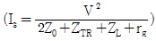
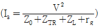
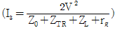
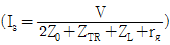
(정답률: 알수없음)
10. 보호선(P.W)에 관한 설명으로 거리가 먼 것은?
- 전자유도현상을 증가시킨다는 단점이 있다.
- 지지물 등의 접지 전위 상승을 억제한다.
- 주요 목적은 사고시의 전차선로 보호를 목적으로 하고 있다.
- 지지물에 설치되어 있는 애자의 섬락을 보호하기 위한 전선이다.
(정답률: 알수없음)
11. 직류 전철화 구간에서 레일과 대지간의 누설전류를 경감하기 위하여 설치하는 것은?
- 변전소(SS)
- 타이 포스트(TP)
- 구분소(SP)
- 정류 포스트(RP)
(정답률: 알수없음)
12. 전차선의 장력을 T, 단위길이당의 질량을 p라 할 때 파동전파속도 C를 나타내는 식은?
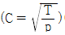
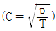
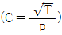
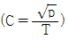
(정답률: 알수없음)
13. 경량전철에서 추진력을 얻는 방식으로 궤도와 차륜의 점착력 대신 리액션 플레이트(reaction plate)사이의 전자력을 추진력으로 사용하는 방식으로 맞는 것은?
- 철제차륜방식
- 고무차륜방식
- 모노레일방식
- LIM방식
(정답률: 알수없음)
14. 가공 전차선로에서 운전속도가 90[m/s]이고 파동전파속도가 110[m/s]일 때 전차선로의 동적 작용을 알 수 있는 도플러 계수는 얼마인가?
- 0.1
- 0.2
- 0.3
- 0.4
(정답률: 알수없음)
15. 가공전차선로에서 전차선의 굵기를 결정하는 요소에 해당되지 않는 것은?
- 허용전류
- 기계적강도
- 전압강하
- 단면형상
(정답률: 알수없음)
16. 교류급전회로에서 고장점 표정장치의 방식 중 AT급전회로에 사용하는 검출 방식으로 맞는 것은?
- 리액턴스 검출방식
- AT흡상 전류비 방식
- 선로 임피던스 검출방식
- 선로저항 검출방식
(정답률: 알수없음)
17. 조가선과 전차선을 경간 중앙에서 교차되도록 각 지지점에서 각기 다른 편위를 갖도록 하는 전차선로의 조가방식은?
- 연 사조식
- 경 사조식
- 반 사조식
- 강체 조가식
(정답률: 알수없음)
18. 급전선의 이도[D]와 장력[T]의 관계식으로 맞는 것은? (단, T:전선의 온도가 t일 때 장력[kgf], w:전선의 단위중량[kg/m], S:경간[m], D:전선의 장력이 T일 때 이도[m])
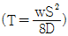
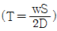
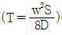
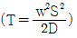
(정답률: 알수없음)
19. 전기차에 공급된 운전용 전력이 변전소로 되돌아 가는데 사용되는 귀선로에 요구되는 성능으로 틀린 것은?
- 대지 누설전류가 작을 것
- 귀선로용 전선은 기계적 강도가 클 것
- 레일 전위의 상승을 증가시킬 수 있을 것
- 귀선로용 전선은 전기차 전류에 대응한 전류용량을 가질 것
(정답률: 알수없음)
20. 고속철도에서 전차선의 표준가고[mm]는?
- 710
- 960
- 1200
- 1400
(정답률: 알수없음)
2과목: 전기철도 구조물공학
21. 전기철도 설계시 고온계(여름에서 가을에 걸친 계절)에서 풍속 40m/s의 바람이 있다고 가정한 경우 발생하는 하중은?
- 갑종 풍압하중
- 을종 풍압하중
- 병종 풍압하중
- 특종 풍압하중
(정답률: 알수없음)
22. 전기철도 구조물에서 지점의 종류로 거리가 먼 것은?
- 정정지점
- 이동지점
- 힌지지점
- 고정지점
(정답률: 알수없음)
23. 전차선로의 곡선로에서 지지점과 경간 중앙에서의 기울기량이 같을 때 전차선의 기울기를 나타내는 공식은? (단, d:전차선의 기울기량[m], S:경간[m], R:곡선반지름[m])
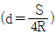
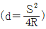
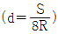
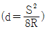
(정답률: 알수없음)
24. 한 점에서 바깥쪽으로 작용하는 두 힘 F1=10t, F2=12t이 45°의 각을 이루고 있을 때 그 협력은?
- 약 30.0t
- 약 32.4t
- 약 24.2t
- 약 20.3t
(정답률: 알수없음)
25. 직선로의 가공전차선로에서 전차선과 조가선의 각 장력을 1000[kgf]로 하고 경간을 40[m]로 할 때, 조가선과 전차선의 수평장력[kgf]은? (단, 전차선의 편위는 100[mm]로 한다.)
- 약 40
- 약 30
- 약 20
- 약 10
(정답률: 알수없음)
26. 그림과 같이 인류장치 설치개소에서 전주와 45°로 지선을 설치할 경우 지선용 재료의 필요한 항장력[kgf]은?
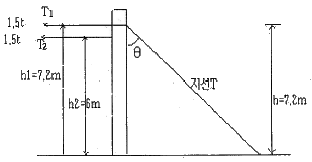
- 약 9120
- 약 9422
- 약 9723
- 약 10853
(정답률: 알수없음)
27. 구조물 설계시 고려하는 힘의 평형 조건에 속하지 않는 것은?
- 수직 방향으로 조금 움직인다.
- 수평 방향으로 움직이지 않는다.
- 상하로 움직이지 않는다.
- 회전하지 않는다.
(정답률: 알수없음)
28. 전기철도 구조물에서 고정지점의 반력수는?
- 1개
- 2개
- 3개
- 4개
(정답률: 알수없음)
29. 지름 6[cm]인 원형 단면에서 도심을 지나는 축에 대한 2차 모멘트[cm4]는?
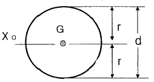
- 약 56
- 약 64
- 약 78
- 약 82
(정답률: 알수없음)
30. 힘의 3요소가 아닌 것은?
- 크기
- 방향
- 모멘트
- 작용점
(정답률: 알수없음)
31. 가공전차선로에서 전철주의 경간 40[m], 곡선반경 500[m]인 경우에 전차선의 편위는 얼마로 유지하여야 하는가?
- 100[mm]
- 150[mm]
- 200[mm]
- 250[mm]
(정답률: 알수없음)
32. 탄성계수 E와 변형률 ε와의 관계는?
- E와 ε는 비례
- E는 ε에 반비례
- E는 ε의 제곱에 비례
- E는 ε의 제곱에 반비례
(정답률: 알수없음)
33. 길이가 4[m]인 각중에 하중을 가해서 변형율이 0.0004가 되었다면 신장량은?
- 1.6[mm]
- 2.6[mm]
- 3.6[mm]
- 4.6[mm]
(정답률: 알수없음)
34. 지표면에서 높이가 11[m]인 단독전주가 32[kgf/m]의 수평분포하중을 받고 있을 때 지면과의 경계점 모멘트[kgf·m]는?
- 968
- 1936
- 2904
- 3872
(정답률: 알수없음)
35. 전차선로용으로 사용하는 철주로 거리가 먼 것은?
- 강관주
- H형강주
- 사각철주
- Y형강주
(정답률: 알수없음)
36. 지름이 18.5[mm]이고 경간이 50[m]인 부급전선에 선로와 직각방향으로 가해지는 전선의 풍압하중[kgf]은? (단, 수직투영면적당 풍압하중은 100[kgf/m2]이다.)
- 18.5
- 23.5
- 36.5
- 92.5
(정답률: 알수없음)
37. 전파속도 300[m/μs], 뢰의 파두장 3[μs]일 때 피뢰기의 직선적 유효 보호범위[m]는?
- 100
- 300
- 450
- 500
(정답률: 알수없음)
38. AI 200[mm2]의 경간 60[m]인 선로에 갑종 풍압하중이 작용하는 경우 곡선로에 대한 횡장력 57[kgf], 단위풍압하중 1.85[kgf/m]인 경우에 선로에 작용하는 수평하중 [kgf]은?
- 130
- 149
- 154
- 168
(정답률: 알수없음)
39. 가공전차선로용 지선의 안전율은 얼마 이상으로 하는가?
- 1.1
- 1.5
- 1.7
- 2.5
(정답률: 알수없음)
40. 부재를 그 부재의 축과 수직인 방향으로 자르려고 하는 힘은?
- 외력
- 반력
- 전단력
- 모멘트
(정답률: 알수없음)
3과목: 전기자기학
41. 전기쌍극자에 의한 등전위면을 극좌표로 나타내면?
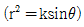
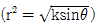
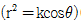
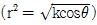
(정답률: 알수없음)
42. 액체 유전체를 포함한 콘덴서 용량이 C[F]인 것에 V[V]의 전압을 가했을 경우에 흐르는 누설전류는 몇 [A]인가? (단, 유전체의 유전율은 ε, 고유저항은 p[Ω·m]이다.)
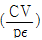
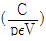
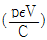
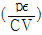
(정답률: 알수없음)
43. 그림과 같이 면적 S[m2]인 평행판 콘덴서의 극판 간에 판과 평행으로 두께 d1[m], d2[m], 유전율 ε1[F/m], ε2[F/m]의 유전체를 삽입하면 정전용량 [F]은?
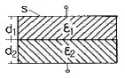
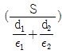
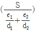
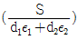
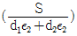
(정답률: 알수없음)
44. 환상철심에 권수 3000회의 A코일과 권수 200회인 B코일이 감겨져 있다. A코일의 자기 인덕턴스가 360[mH]일 때, A, B 두 코일의 상호 인덕턴스[mH]는? (단, 결합계수는 1이다.)
- 16[mH]
- 24[mH]
- 36[mH]
- 72[mH]
(정답률: 알수없음)
45. 대전된 도체의 특징이 아닌 것은?
- 도체에 인가된 전하는 도체 표면에만 분포한다.
- 가우스법칙에 의해 내부에는 전하가 존재한다.
- 전계는 도체 표면에 수직인 방향으로 진행된다.
- 도체표면에서의 전하밀도는 곡률이 클수록 높다.
(정답률: 알수없음)
46. 전자파의 전파속도 [m/s]에 대한 설명 중 옳은 것은?
- 유전율에 비례한다.
- 유전율에 반비례한다.
- 유전율과 투자율의 곱의 제곱근에 비례한다.
- 유전율과 투자율의 곱의 제곱근에 반비례한다.
(정답률: 알수없음)
47. 그림과 같이 한 변의 길이가 ℓ[m]인 정6각형 회로에 전류 I[A]가 흐르고 있을 때 중심 자계의 세기는 몇 [A/m]인가?
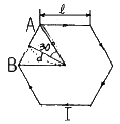
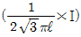
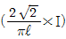
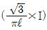
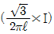
(정답률: 알수없음)
48. 패러데이의 법칙에 대한 설명으로 가장 알맞은 것은?
- 전자유도에 의하여 회로에 발생되는 기전력은 자속쇄교수의 시간에 대한 증가율에 반비례한다.
- 전자유도에 의하여 회로에 발생되는 기전력은 자속의 변화를 방해하는 방향으로 기전력이 유도된다.
- 정전유도에 의하여 회로에 발생하는 기자력은 자속의 변화방향으로 유도된다.
- 전자유도에 의하여 회로에 발생하는 기전력은 자속쇄교수의 시간 변화율에 비례한다.
(정답률: 알수없음)
49. 그림과 같이 비투자율 μs1, μs2인 각각 다른 자성체를 접하여 놓고 θ1을 입사각이라 하고, θ2를 굴절각이라 한다. 경계면에 자하가 없는 경우 미소 폐곡면을 취하여 이 곳에 출입하는 자속수를 구하면?
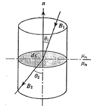
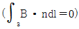
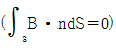
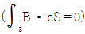
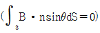
(정답률: 알수없음)
50. 면전하 밀도가 ps[C/m2]인 무한히 넓은 도체판에서 R[m]만큼 떨어져 있는 점의 전계의 세기[V/m]는?
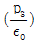
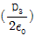
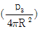
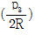
(정답률: 알수없음)
51. 평균길이 1[m], 권수 1000회의 솔레노이드 코일에 비투자율 1000의 철심을 넣고 자속밀도 1[Wb/m2]을 얻기 위해 코일에 흘려야 할 전류는 몇 [A]인가?
- 10/4π
- 100/8π
- 6π/100
- 4π/10
(정답률: 알수없음)
52. 그림에서 ℓ=100[cm], S=10[cm2], μs=100, N=1000회인 회로에 전류 I=10[A]를 흘렸을 때 저축되는 에너지는 몇 [J]인가?
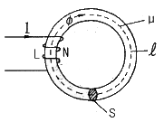
- 2π×10-1
- 2π×10-2
- 2π×10-3
- 2π
(정답률: 알수없음)
53. 그림과 같이 평행판 콘덴서에 교류전원을 접속할 때 전류의 연속성에 대해서 성립하는 식은? (단, E:전계, D:전속밀도, p:체적전하밀도, i:전도전류밀도, B:자속밀도, t:시간이다.)
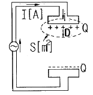
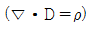
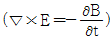
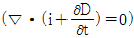
(정답률: 알수없음)
54. 두 개의 길고 직선인 도체가 평행으로 그림과 같이 위치하고 있다. 각 도체에는 10[A]의 전류가 같은 방향으로 흐르고 있으며, 이격거리는 0.2[m]일 때 오른쪽 도체의 단위 길이당 힘은? (단 , ax, az는 단위 벡터이다.)
- 10-2(-ax)[N/m]
- 10-4(-ax)[N/m]
- 10-2(-az)[N/m]
- 10-4(-az)[N/m]
(정답률: 알수없음)
55. 맥스웰의 전자방정식에 대한 의미를 설명한 것으로 잘못된 것은?
- 자계의 회전은 전류밀도와 같다.
- 전계의 회전은 자속밀도의 시간적 감소율과 같다.
- 단위체적 당 발산 전속수는 단위체적 당 공간전하 밀도와 같다.
- 자계는 발산하며, 자극은 단독으로 존재한다.
(정답률: 알수없음)
56. 강자성체의 자속밀도 B의 크기와 자화의 세기 J의 크기 사이에는 어떤 관계가 있는가?
- J는 B와 같다.
- J는 B보다 약간 작다.
- J는 B보다 약간 크다.
- J는 B보다 대단히 크다.
(정답률: 알수없음)
57. 유전체에서 변위 전류를 발생하는 것은?
- 분극전하밀도의 공간적 변화
- 분극전하밀도의 시간적 변화
- 전속밀도의 공간적 변화
- 전속밀도의 시간적 변화
(정답률: 알수없음)
58. 무한이 넓은 두 장의 도체판을 d[m]의 간격으로 평행하게 놓은 후, 두 판 사이에 V[V]의 전압을 가한 경우 도체판의 단위 면적당 작용하는 힘은 약 [N/m2]인가?
(정답률: 알수없음)
59. 정전에너지, 전속밀도 및 유전상수 εr의 관계에 대한 설명 중 옳지 않은 것은?
- 동일 전속밀도에서는 εr이 클수록 정전에너지는 작아진다.
- 동일 정전에너지에서는 εr이 클수록 전속밀도가 커진다.
- 전속은 매질에 축적되는 에너지가 최대가 되도록 분포된다.
- 굴절각이 큰 유전체는 εr이 크다.
(정답률: 알수없음)
60. 일반적으로 지구를 가지는 자성체는?
- 상자성체
- 강자성체
- 역자성체
- 비자성체
(정답률: 알수없음)
4과목: 전력공학
61. 송전선로에서 이상전압이 가장 크게 발생하기 쉬운 경우는?
- 무부하 송전선로를 폐로하는 경우
- 무부하 송전선로를 개로하는 경우
- 부하 송전선로를 폐로하는 경우
- 부하 송전선로를 개로하는 경우
(정답률: 알수없음)
62. 1선의 저항이 10Ω, 리액턴스가 15Ω인 3상 송전선이 있다. 수전단 전압 60kV, 부하역률 0.8(1ag), 부하전류100A라고 할 때 송전단 전압은?
- 약 61[kV]
- 약 63[kV]
- 약 81[kV]
- 약 83[kV]
(정답률: 알수없음)
63. 기저(基底)부하용으로 사용하기 적합한 발전방식은?
- 석탄 화력
- 저수지식 수력
- 양수식 수력
- 원자력
(정답률: 알수없음)
64. 6.6kV 고압 배전선로(비접지 선로)에서 지락보호를 위하여 특별히 필요치 않은 것은?
- 과전류계전기(OCR)
- 선택접지계전기(SGR)
- 영상변류기(ZCT)
- 접지변압기(GPT)
(정답률: 알수없음)
65. 직렬콘덴서를 선로에 삽입할 때의 이점이 아닌 것은?
- 선로의 인덕턴스를 보상한다.
- 수전단의 전압변동률을 줄인다.
- 정태안정도를 증가한다.
- 수전단의 역률을 개선한다.
(정답률: 알수없음)
66. 유역면적이 4000km2인 어떤 발전 지점이 있다. 유역내의 연강수량이 1400mm이고, 유출계수가 75%라고 하면 그 지점을 통과하는 연평균 유량은?
- 약 121[m3/s]
- 약 133[m3/s]
- 약 251[m3/s]
- 약 150[m3/s]
(정답률: 알수없음)
67. △결선의 3상3선식 배전선로가 있다. 1선이 지락하는 경우 건전상의 전위 상승은 지락 전의 몇 배가 되는가?
- √3
- 3
- 3√2
- 3/2
(정답률: 알수없음)
68. 6.6kV, 60Hz, 3상3선식 비접지식에서 선로의 길이가 10km이고 1선의 대지정전용량이 0.0⑤㎌/km일 때 1선 지락 시의 고장전류 Ig[A]의 범위로 옳은 것은?
- Ig<1
- 1≤Ig<2
- 2≤Ig<3
- 3≤Ig<4
(정답률: 알수없음)
69. 전력원선도에서 구할 수 없는 것은?
- 송·수전할 수 있는 최대 전력
- 필요한 전력을 보내기 위한 송·수전단 전압간의 상차각
- 선로 손실과 송전 효율
- 과도극한전력
(정답률: 알수없음)
70. 비접지 방식에 대한 설명 중 옳은 것은?
- 보호 계전기의 동작이 가장 확실하다.
- 고전압 송전방식으로 주로 책택되고 있다.
- 장거리 송전에 적합하다.
- V-V결선이 가능하다.
(정답률: 알수없음)
71. 용량 30MVA, 33/11kV, △-Y결선 변압기에 차동보호계전기가 설치되어 있다. 이 변압기로 30MVA 부하에 전력을 공급할 때 부하측에 설치된 ㉠CT의 결선방법과 ㉡OT전류로 가장 적합한 것은?
- ㉠ Y결선, ㉡ 3.9A
- ㉠ Y결선, ㉡ 6.8A
- ㉠ △결선, ㉡ 3.9A
- ㉠ △결선, ㉡ 6.8A
(정답률: 알수없음)
72. 송전선로의 고장전류의 계산에 영상 임피던스가 필요한 경우는?
- 3상 단락
- 3선 단선
- 1선 지락
- 선간 단락
(정답률: 알수없음)
73. 3000kW, 역률 80%(늦음)의 부하에 전력을 공급하고 있는 변전소의 역률을 90%로 향상시키는데 필요한 전력용 콘덴서의 용량은?
- 약 600[kVA]
- 약 700[kVA]
- 약 800[kVA]
- 약 900[kVA]
(정답률: 알수없음)
74. 조상설비에 대한 설명으로 잘못된 것은?
- 송·수전단의 전압이 일정하게 유지되도록 하는 조정 역할을 한다.
- 역률의 개선으로 송전 손실을 경감시키는 역할을 한다.
- 전력 계통 안정도 향상에 기여한다.
- 이상전압으로부터 선로 및 기기의 보호능력을 가진다.
(정답률: 알수없음)
75. 송전용량이 증가함에 따라 송전선의 단락 및 지락전류도 증가하여 계통에 여러 가지 장해요인이 되고 있는데 이들의 경감대책으로 적합하지 않은 것은?
- 계통의 전압을 높인다.
- 발전기와 변압기의 임피던스를 작게 한다.
- 송전선 또는 모선간에 한류리액터를 삽입한다.
- 고장 시 모선 분리 방식을 채용한다.
(정답률: 알수없음)
76. 고압고온을 채용한 기력발전소에서 채용되는 열사이클로 그림과 같은 장치선도의 열사이클은?
- 랭킨사이클
- 재생사이클
- 재열사이클
- 재열재생사이클
(정답률: 알수없음)
77. 각 수용가의 수용률 및 수용가 사이의 부등률이 변화할 때 수용가군 총합의 부하율에 대한 설명으로 옳은 것은?
- 수용률에 비례하고 부동률에 반비례한다.
- 부동률에 비례하고 수용률에 반비례한다.
- 부동률과 수용률에 모두 비례한다.
- 부동률과 수용률에 모두 반비례한다.
(정답률: 알수없음)
78. 그림과 같은 전력계통에서 A점에 설치된 차단기의 단락 용량은? (단, 각 기기의 %리액턴스는 발전기 G1, G2는 정격용량 15MVA기준 각각 15%이고, 변압기는 정격용량 20MVA 기준 8%, 송전선은 정격용량 10MVA기준 11%이며, 기타 다른 정수는 무시한다.)
- 5[MVA]
- 50[MVA]
- 500[MVA]
- 5000[MVA]
(정답률: 알수없음)
79. 장거리 송전선로는 일반적으로 어떤 회로로 취급하여 회로를 해석하는가?
- 분산부하회로
- 집중정수회로
- 분포정수회로
- 특성임피던스회로
(정답률: 알수없음)
80. 원자로에 사용되는 감속재가 구비하여야 할 조건으로 틀린 것은?
- 중성자 에너지를 빨리 감속시킬 수 있을 것
- 불필요한 중성자 흡수가 적을 것
- 원자의 질량이 클 것
- 감속능 및 감속비가 클 것
(정답률: 알수없음)